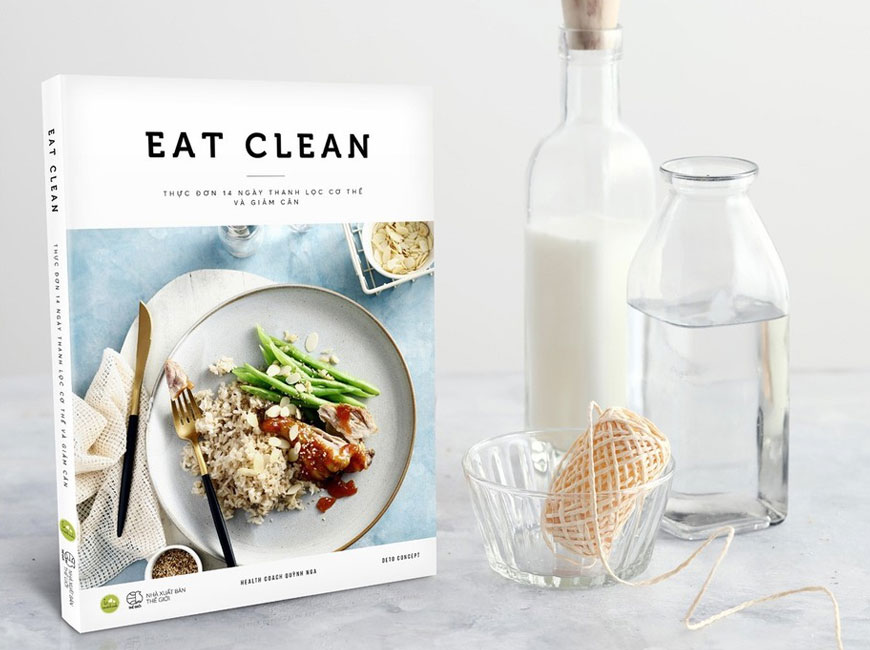
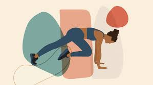

Eat clean
Chế độ ăn Eat Clean là gì?
Eat clean sử dụng các loại thực phẩm càng gần với trạng thái tự nhiên giúp cung cấp lợi ích dinh dưỡng tối đa
Lựa chọn thực phẩm có phẩm chất tốt và bền vững cũng là một phần của “eat clean”.
Các nguyên tắc cơ bản của eat clean sẽ khuyến khích bạn tiêu thụ nhiều thực phẩm nguyên chất hơn như:
trái cây, rau, protein nạc,ngũ cốc nguyên hạt và chất béo lành mạnh và đồng thời,hạn chế thực phẩm ăn
nhanh đã qua chế biến, đồ ngọt và các loại thực phẩm đóng gói khác.
Một ví dụ về bữa ăn có tất cả những thực phẩm này sẽ là món salad rau bina với gà nướng, quả bơ, quả óc chó và táo.

Recipes
Chế độ dinh dưỡng chiếm đên 70%-80% sự thành công của quá trình giảm cân của bạn.
Để biết cơ thể của bạn cần nạp bao nhiêu calo mỗi ngày,bạn phải tính các chỉ số cơ thể, như BMI,BMR,TDEE.
Trang web để tính:Tính BMI,BMR và TDEE
Tiếp theo,bạn cần biết lượng calo cần nạp vào trong ngày để kiểm soát lượng calo nạp vào.
Đây là trang web bạn có thể tham khảo:Tính calo nạp vào
Tiếp theo,để biết được lượng calo bạn nạp vào cơ thể,bạn phải tính calo trong mỗi thực phẩm.
Bạn có thể tham khảo ở đây:Tính calo
Và quan trọng nhất là xây dựng chế độ dinh dưỡng phù hợp với cơ thể của bạn.
Chloe Ting
Thực đơn dễ dàng


Workout
Bên cạnh chế độ ăn lành mạnh,phù hợp với cơ thể thì việc tập thể dục giúp cơ thể chúng ta săn chắc
và ít mỡ hơn. Tập thể dục hàng ngày không chỉ giúp con người nâng cao thể trạng mà còn phòng ngừa được
nhiều bệnh lý nguy hiểm, kéo dài tuổi thọ. Thông thường các bác sĩ sẽ khuyến khích mỗi người nên thực
hiện tập thể dục khoảng 30 phút mỗi ngày. Có rất nhiều lọai bài tập mà bạn có thể lụa chọn như HIIT,
cardio, gym, aerobic, đi bộ, nhảy dây,.. tùy vào sở thích mỗi người. Việc xây dựng chế độ tập cũng
hết sức quan trong bởi lẽ nó góp phần xây dựng cơ giúp cơ thể săn chắc. Dưới đây là những bài tập mà
bạn có thể áp dụng:
Emi Wong
Pamela Reif
Chloe Ting
April Han

Lưu ý